Plotting functions in R2#
# finding positive and negative regions in a fraction function
import matplotlib.pyplot as plt
import numpy as np
# 100 linearly spaced numbers
x = np.linspace(-2,4,100)
# the functions, which are y = sin(x) and z = cos(x) here
y = x-1
labely='numerador y=x-1'
z = x**2-2*x-3
labelz='denominador y=x^2-2x-3'
# setting the axes at the centre
fig = plt.figure()
ax = fig.add_subplot(1, 1, 1)
ax.spines['left'].set_position('zero')
ax.spines['bottom'].set_position('zero')
ax.spines['right'].set_color('none')
ax.spines['top'].set_color('none')
ax.xaxis.set_ticks_position('bottom')
ax.yaxis.set_ticks_position('left')
ax.fill_between(x,0,y,where=y>0,hatch='+',edgecolor='b',facecolor='none')
ax.fill_between(x,0,z,where=z>0,hatch='+',edgecolor='b',facecolor='none')
ax.fill_between(x,0,y,where=y<0,hatch='-',edgecolor='y',facecolor='none')
ax.fill_between(x,0,z,where=z<0,hatch='-',edgecolor='y',facecolor='none')
ax.fill_between(x,-0.5,0.5,where=(z>0) & (y>0),facecolor='green')
ax.fill_between(x,-0.5,0.5,where=(z<0) & (y<0),facecolor='green')
# plot the functions
plt.plot(x,y, 'c', label=labely)
plt.plot(x,z, 'm', label=labelz)
plt.legend(loc='upper left')
# show the plot
plt.savefig('posneg1.png')
plt.show()
#plotting a function
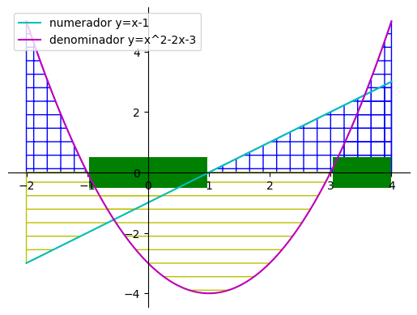
Plotting affine transformations#
# transformació afí d'un polígon a R2
import matplotlib.pyplot as plt
import numpy as np
import math
def rotmatrix(alpha):
A = np.array([[math.cos(alpha), -math.sin(alpha)],[math.sin(alpha),math.cos(alpha)]])
return A
def centroid(arr): # faig el centroide del polígon. Cal fixar-se que aquest té un punt més del desitjat per al càlcul
length = arr.shape[1]-1
sum_x = np.sum(arr[0,:-1])
sum_y = np.sum(arr[1,:-1])
print('-----',arr,arr[:,0],arr[:,1],length,sum_x,sum_y,'------')
C = np.array([sum_x/length,sum_y/length])
return C
def transformacioAfi(A,B,P1orig,P1transf,nom): #uso dos P1, per si cal dibuixar l'original
P1=P1transf #el que usaré per als càlculs
columns = P1.shape[1]
rows = P1.shape[0]
# aplico la transformada afí
P2=A.dot(P1)
for j in range(columns):
P2[:,j] = P2[:,j]+B
# setting the axes at the centre
fig = plt.figure(figsize=(10,10))
ax = fig.add_subplot(1, 1, 1)
ax.spines['left'].set_position('zero')
ax.spines['bottom'].set_position('zero')
ax.spines['right'].set_color('none')
ax.spines['top'].set_color('none')
ax.xaxis.set_ticks_position('bottom')
ax.yaxis.set_ticks_position('left')
plt.xticks(fontsize=25)
plt.yticks(fontsize=25)
plt.grid(True)
# dibuixo els polígons
plt.plot(P1orig[0,:],P1orig[1,:], 'o')
plt.plot(P2[0,:],P2[1,:], 'o')
plt.fill(P1orig[0,:],P1orig[1,:])
plt.fill(P2[0,:],P2[1,:],hatch="X",color="none",edgecolor="b")
# dibuixo els vectors que han generat el desplaçament dels punts
for i in range(columns):
ax.arrow(P1orig[0,i],P1orig[1,i],P2[0,i]-P1orig[0,i],P2[1,i]-P1orig[1,i],
head_width=1, head_length=1, linewidth=3, length_includes_head=True,
fc='k', ec='k')
# show the plot
plt.savefig(nom+'.png')
plt.show()
return(P2)
# el polígon a transformar té un nombre de vèrtex n. L'array que genero repeteix el primer
# vèrtex en la darrera posició per tal de poder fer un plt.fill al fer el gràfic
P1 = np.array([[10,5,20,10],[10,20,5,10]])
#######################################
# TRANSFORMACIONS AFINS ELEMENTALS
#######################################
A = np.array([[0, 1],[2,1]]); B = np.array([-10,-10]); nom='transafi'# generic example
P2=transformacioAfi(A,B,P1,P1,nom)
print(P2,nom)
A = np.array([[1, 0],[0,1]]); B = np.array([-10,-10]); nom='translation' # translation
P2=transformacioAfi(A,B,P1,P1,nom)
print(P2,nom)
A = np.array([[3, 0],[0,7]]); B = np.array([0,0]); nom= 'escala' # scaling
P2=transformacioAfi(A,B,P1,P1,nom)
print(P2,nom)
A = np.array([[2, 0],[0,2]]); B = np.array([0,0]); nom= 'homotecia' # homotècia de raó
P2=transformacioAfi(A,B,P1,P1,nom)
print(P2,nom)
A = np.array([[-1, 0],[0,1]]); B = np.array([0,0]); nom='simetriaY' # simetria axial respecte eix Y
P2=transformacioAfi(A,B,P1,P1,nom)
print(P2,nom)
A = np.array([[1, 0],[0,-1]]); B = np.array([0,0]); nom='simetriaX' # simetria axial respecte eix X
P2=transformacioAfi(A,B,P1,P1,nom)
print(P2,nom)
A = np.array([[-1, 0],[0,-1]]); B = np.array([0,0]); nom='simetriaO' # simetria axial respecte orígen de coordenades
P2=transformacioAfi(A,B,P1,P1,nom)
print(P2,nom)
alpha= math.pi/2; A = rotmatrix(alpha); B = np.array([0,0]); nom='rotacio' # rotació
P2=transformacioAfi(A,B,P1,P1,nom)
print(P2,nom)
A = np.array([[1, 4],[0,1]]); B = np.array([0,0]); nom='shear' # shear / cisallament
P2=transformacioAfi(A,B,P1,P1,nom)
print(P2,nom)
#######################################
# COMPOSICIÓ DE TRANSFORMACIONS AFINS ELEMENTALS
#######################################
# Homotècia inversa
A1 = np.array([[-1, 0],[0,-1]])
A2 = np.array([[2, 0],[0,2]])
A = A1.dot(A2); B = np.array([0,0]); nom= 'homoteciaInversa' # homotècia inversa
P2=transformacioAfi(A,B,P1,P1,nom)
print(P2,nom)
# Canvi d'escala in situ d'un objecte
Cvec = centroid(P1)
Cmat = Cvec
for i in range(int(P1.shape[1])-1): # creo una matriu per poder sumar totes les coordinades als vèrtex (poc elegant, ho sé)
Cmat = np.c_[Cmat,Cvec]
print('\n P1',P1,'\n P1-Cmat',P1-Cmat,'\n Cvec',Cvec,'\n Cmat',Cmat)
A = np.array([[3, 0],[0,7]]); B = np.array([0,0]); nom= 'canviescala' # canvi d'escala de centre en punt diferent de O
P2=transformacioAfi(A,Cvec,P1,P1-Cmat,nom)
print(P2,nom)
# Rotació in situ d'un objecte
Cvec = centroid(P1)
Cmat = Cvec
for i in range(int(P1.shape[1])-1): # creo una matriu per poder sumar totes les coordinades als vèrtex (poc elegant, ho sé)
Cmat = np.c_[Cmat,Cvec]
print('\n P1',P1,'\n P1-Cmat',P1-Cmat,'\n Cvec',Cvec,'\n Cmat',Cmat)
A = rotmatrix(alpha); B = np.array([0,0]); nom= 'rotacioC' # rotació en punt C diferent de O
P2=transformacioAfi(A,Cvec,P1,P1-Cmat,nom)
print(P2,nom)
# Simetria respecte una recta que passa pel punt C
Cvec = centroid(P1)
Cmat = Cvec
theta = -math.pi/3
for i in range(int(P1.shape[1])-1): # creo una matriu per poder sumar totes les coordinades als vèrtex (poc elegant, ho sé)
Cmat = np.c_[Cmat,Cvec]
print('\n P1',P1,'\n P1-Cmat',P1-Cmat,'\n Cvec',Cvec,'\n Cmat',Cmat)
A = rotmatrix(theta).dot(np.array([[1, 0],[0,-1]]).dot(rotmatrix(-theta)))
B = np.array([0,0]); nom= 'simetriatheta' # simetria respecte una recta donada d'inclinació theta
P2=transformacioAfi(A,Cvec,P1,P1-Cmat,nom)
print(P2,nom)
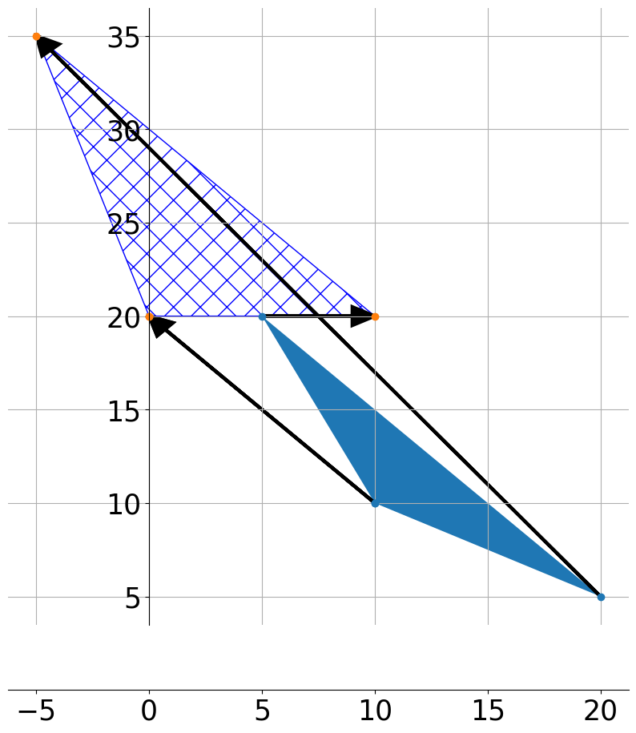
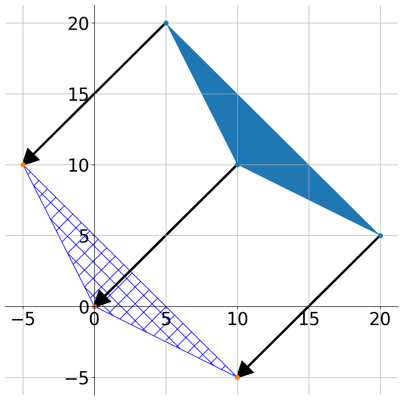
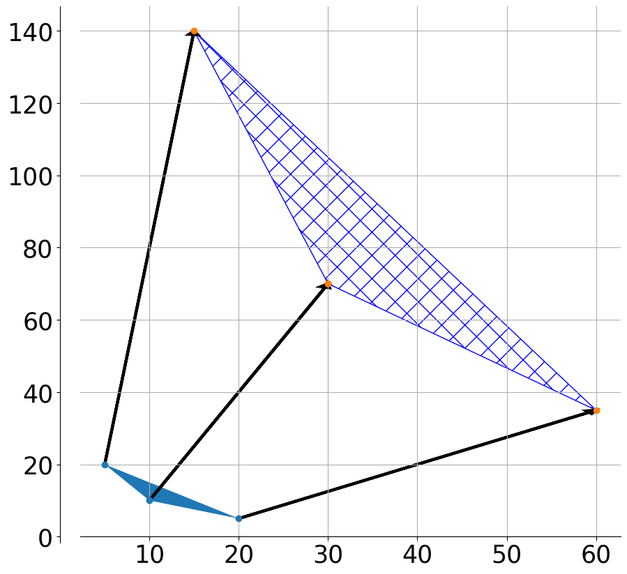
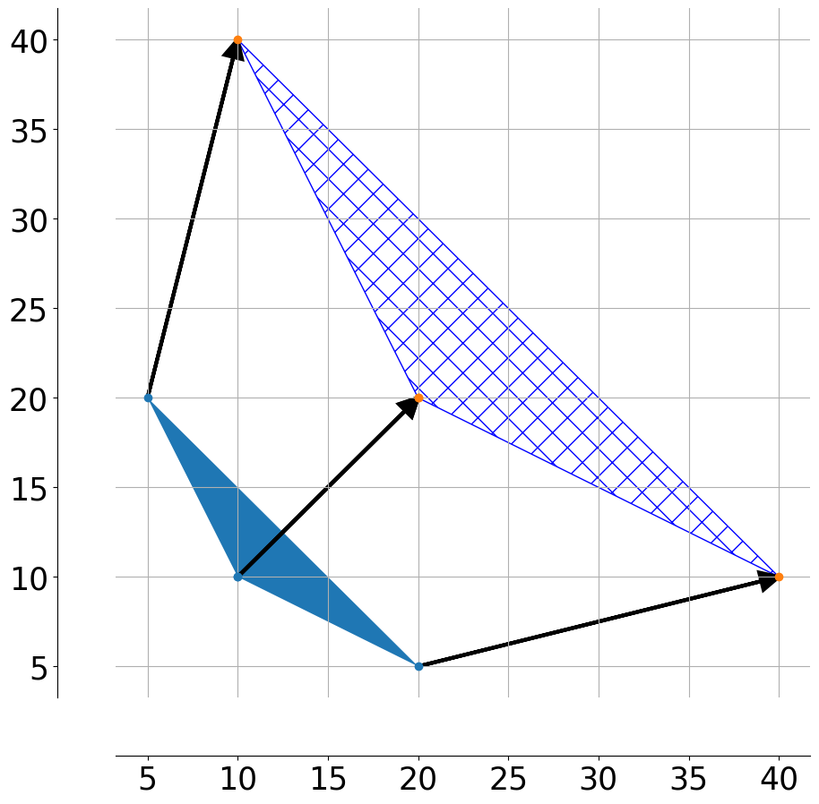
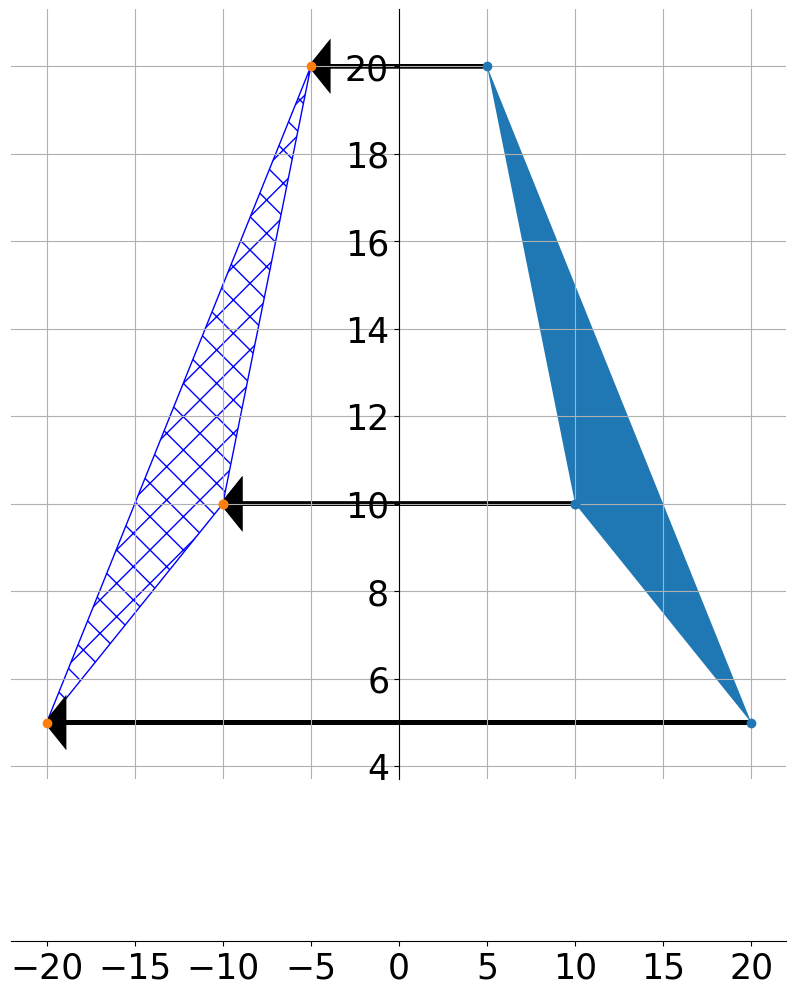
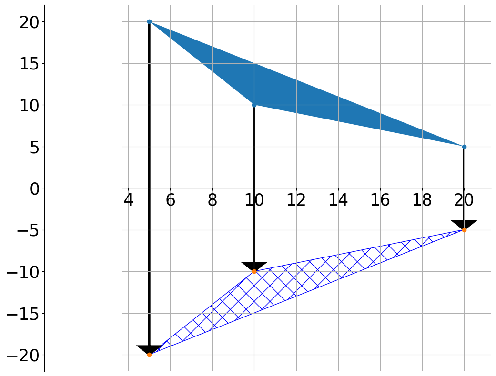
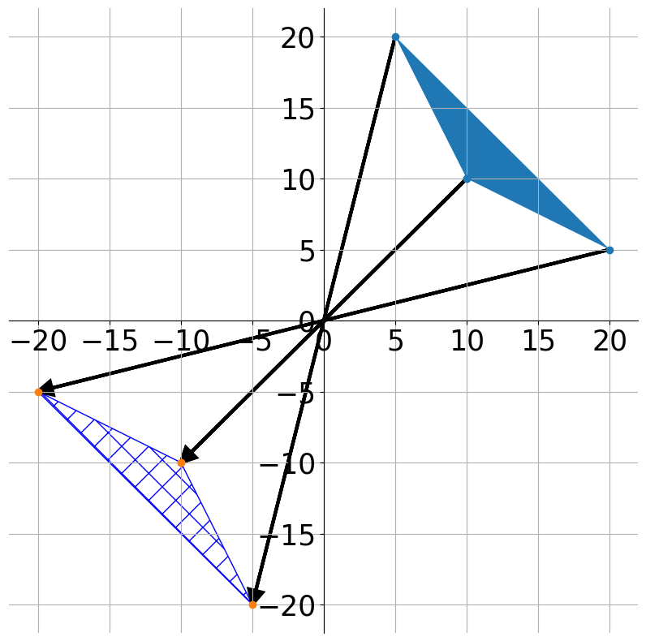
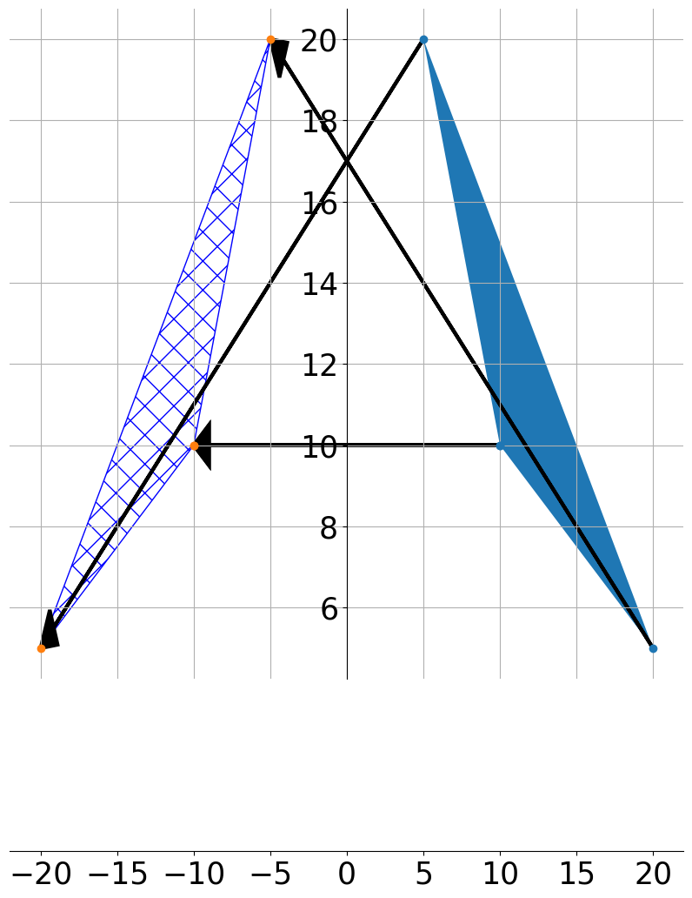
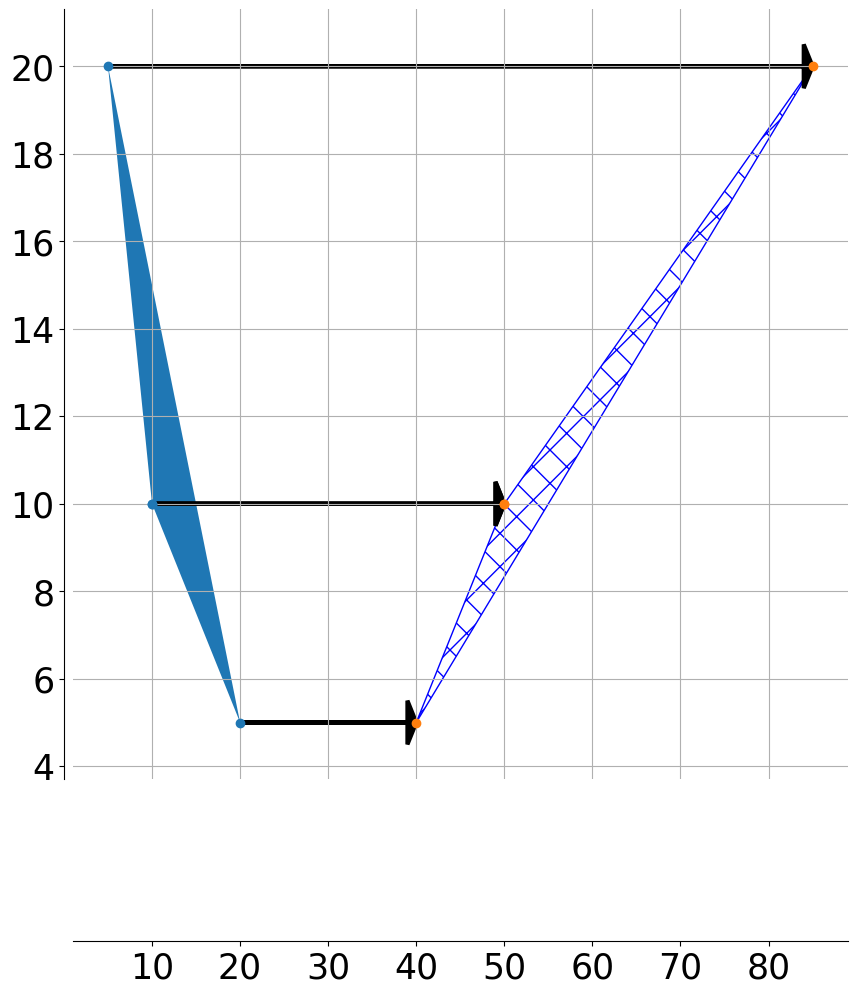
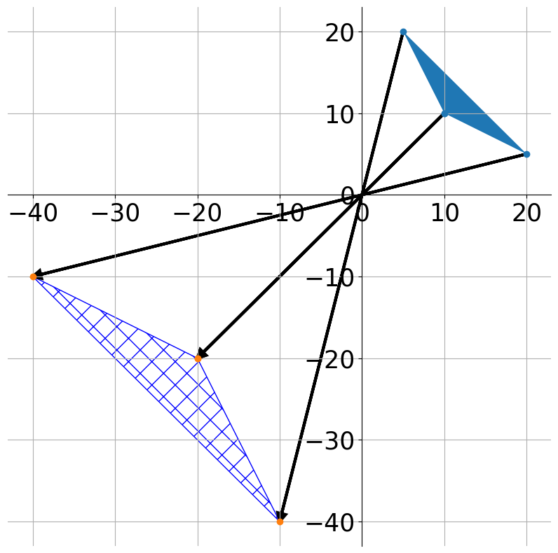
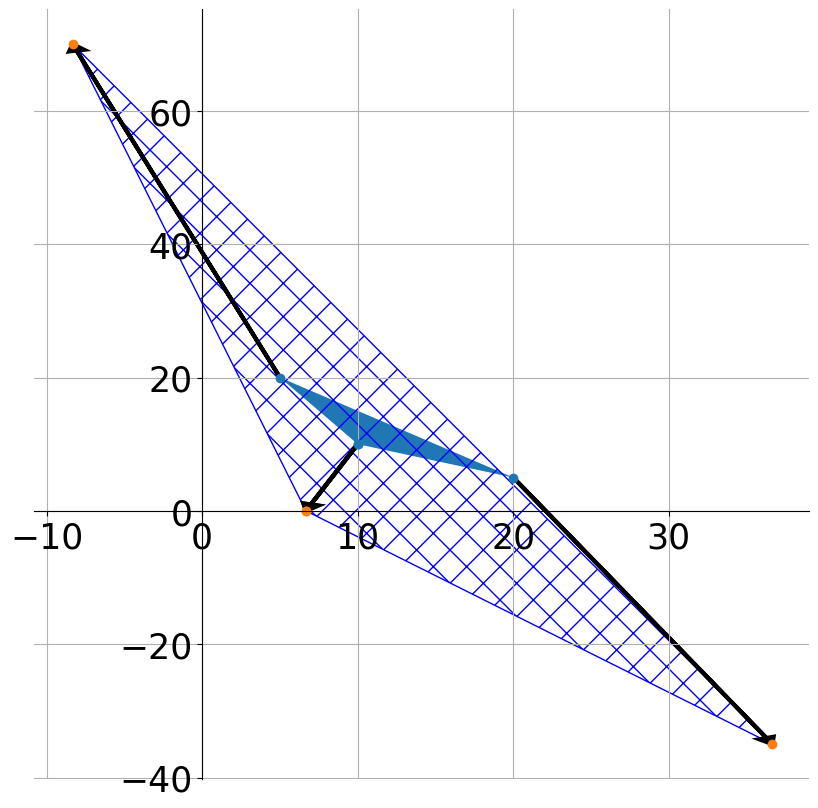
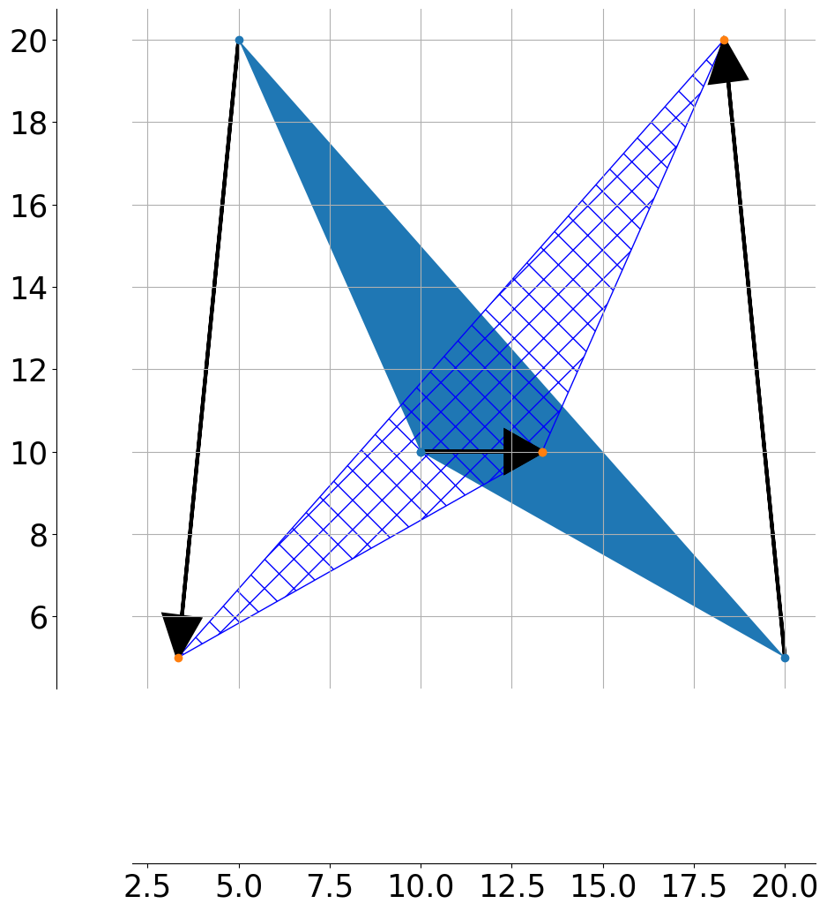
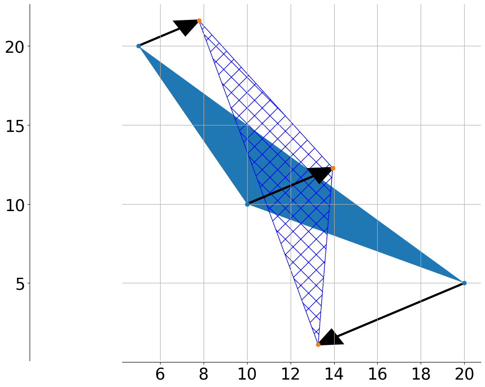
[[ 0 10 -5 0]
[20 20 35 20]] transafi
[[ 0 -5 10 0]
[ 0 10 -5 0]] translation
[[ 30 15 60 30]
[ 70 140 35 70]] escala
[[20 10 40 20]
[20 40 10 20]] homotecia
[[-10 -5 -20 -10]
[ 10 20 5 10]] simetriaY
[[ 10 5 20 10]
[-10 -20 -5 -10]] simetriaX
[[-10 -5 -20 -10]
[-10 -20 -5 -10]] simetriaO
[[-10. -20. -5. -10.]
[ 10. 5. 20. 10.]] rotacio
[[50 85 40 50]
[10 20 5 10]] shear
[[-20 -10 -40 -20]
[-20 -40 -10 -20]] homoteciaInversa
----- [[10 5 20 10]
[10 20 5 10]] [10 10] [ 5 20] 3 35 35 ------
P1 [[10 5 20 10]
[10 20 5 10]]
P1-Cmat [[-1.66666667 -6.66666667 8.33333333 -1.66666667]
[-1.66666667 8.33333333 -6.66666667 -1.66666667]]
Cvec [11.66666667 11.66666667]
Cmat [[11.66666667 11.66666667 11.66666667 11.66666667]
[11.66666667 11.66666667 11.66666667 11.66666667]]
[[ 6.66666667e+00 -8.33333333e+00 3.66666667e+01 6.66666667e+00]
[ 3.55271368e-15 7.00000000e+01 -3.50000000e+01 3.55271368e-15]] canviescala
----- [[10 5 20 10]
[10 20 5 10]] [10 10] [ 5 20] 3 35 35 ------
P1 [[10 5 20 10]
[10 20 5 10]]
P1-Cmat [[-1.66666667 -6.66666667 8.33333333 -1.66666667]
[-1.66666667 8.33333333 -6.66666667 -1.66666667]]
Cvec [11.66666667 11.66666667]
Cmat [[11.66666667 11.66666667 11.66666667 11.66666667]
[11.66666667 11.66666667 11.66666667 11.66666667]]
[[13.33333333 3.33333333 18.33333333 13.33333333]
[10. 5. 20. 10. ]] rotacioC
----- [[10 5 20 10]
[10 20 5 10]] [10 10] [ 5 20] 3 35 35 ------
P1 [[10 5 20 10]
[10 20 5 10]]
P1-Cmat [[-1.66666667 -6.66666667 8.33333333 -1.66666667]
[-1.66666667 8.33333333 -6.66666667 -1.66666667]]
Cvec [11.66666667 11.66666667]
Cmat [[11.66666667 11.66666667 11.66666667 11.66666667]
[11.66666667 11.66666667 11.66666667 11.66666667]]
[[13.94337567 7.78312164 13.27350269 13.94337567]
[12.27670901 21.60683603 1.11645497 12.27670901]] simetriatheta
# transformació afí d'un polígon a R2 fent servir notació homogènia
import matplotlib.pyplot as plt
import numpy as np
import math
np.set_printoptions(formatter={'float': lambda x: 'float: ' + str(x)})
def printMatrix(A,a):
print('matrix '+A)
for line in a:
print (' '.join(map(str, line)))
def centroid(arr): # faig el centroide del polígon. Cal fixar-se que aquest té un punt més del desitjat per al càlcul
length = arr.shape[1]-1
sum_x = np.sum(arr[0,:-1])
sum_y = np.sum(arr[1,:-1])
print('-----',arr,arr[:,0],arr[:,1],length,sum_x,sum_y,'------')
C = np.array([sum_x/length,sum_y/length])
return C
def transformacioAfiHom(A,P1orig,P1transf,nom): #uso dos P1, per si cal dibuixar l'original
P1=P1transf #el que usaré per als càlculs
columns = P1.shape[1]
rows = P1.shape[0]
# aplico la transformada afí
P2=A.dot(P1)
for j in range(columns):
P2[:,j] = P2[:,j]
# setting the axes at the centre
fig = plt.figure(figsize=(10,10))
ax = fig.add_subplot(1, 1, 1)
ax.spines['left'].set_position('zero')
ax.spines['bottom'].set_position('zero')
ax.spines['right'].set_color('none')
ax.spines['top'].set_color('none')
ax.xaxis.set_ticks_position('bottom')
ax.yaxis.set_ticks_position('left')
plt.xticks(fontsize=20)
plt.yticks(fontsize=20)
plt.grid(True)
# dibuixo els polígons
plt.plot(P1orig[0,:],P1orig[1,:], 'o')
plt.plot(P2[0,:],P2[1,:], 'o')
plt.fill(P1orig[0,:],P1orig[1,:])
plt.fill(P2[0,:],P2[1,:],hatch="X",color="none",edgecolor="b")
# dibuixo els vectors que han generat el desplaçament dels punts
for i in range(columns):
ax.arrow(P1orig[0,i],P1orig[1,i],P2[0,i]-P1orig[0,i],P2[1,i]-P1orig[1,i],
head_width=0.5, head_length=0.5, linewidth=3, length_includes_head=True,
fc='k', ec='k')
# show the plot
plt.savefig(nom+'.png',dpi=100)
plt.show()
return(P2)
# el polígon a transformar té un nombre de vèrtex n. L'array que genero repeteix el primer
# vèrtex en la darrera posició per tal de poder fer un plt.fill al fer el gràfic
P1 = np.array([[2,0,4,0,2],[6,6,4,4,6],[1,1,1,1,1]])
#######################################
# TRANSFORMACIONS AFINS ELEMENTALS
#######################################
a11=0
a12=1
b1=-10
a21=2
a22=1
b2=-10
A = np.array([[a11, a12,b1],[a21,a22,b2],[0,0,1]]); nom='../quizes/figures/transafiHom'# generic example
P2=transformacioAfiHom(A,P1,P1,nom)
printMatrix('A',A)
printMatrix('P1',P1)
printMatrix('P2',P2)
---------------------------------------------------------------------------
FileNotFoundError Traceback (most recent call last)
Cell In[3], line 77
75 b2=-10
76 A = np.array([[a11, a12,b1],[a21,a22,b2],[0,0,1]]); nom='../quizes/figures/transafiHom'# generic example
---> 77 P2=transformacioAfiHom(A,P1,P1,nom)
78 printMatrix('A',A)
79 printMatrix('P1',P1)
Cell In[3], line 59, in transformacioAfiHom(A, P1orig, P1transf, nom)
53 ax.arrow(P1orig[0,i],P1orig[1,i],P2[0,i]-P1orig[0,i],P2[1,i]-P1orig[1,i],
54 head_width=0.5, head_length=0.5, linewidth=3, length_includes_head=True,
55 fc='k', ec='k')
57 # show the plot
---> 59 plt.savefig(nom+'.png',dpi=100)
60 plt.show()
61 return(P2)
File ~/miniconda3/lib/python3.10/site-packages/matplotlib/pyplot.py:1023, in savefig(*args, **kwargs)
1020 @_copy_docstring_and_deprecators(Figure.savefig)
1021 def savefig(*args, **kwargs):
1022 fig = gcf()
-> 1023 res = fig.savefig(*args, **kwargs)
1024 fig.canvas.draw_idle() # Need this if 'transparent=True', to reset colors.
1025 return res
File ~/miniconda3/lib/python3.10/site-packages/matplotlib/figure.py:3343, in Figure.savefig(self, fname, transparent, **kwargs)
3339 for ax in self.axes:
3340 stack.enter_context(
3341 ax.patch._cm_set(facecolor='none', edgecolor='none'))
-> 3343 self.canvas.print_figure(fname, **kwargs)
File ~/miniconda3/lib/python3.10/site-packages/matplotlib/backend_bases.py:2366, in FigureCanvasBase.print_figure(self, filename, dpi, facecolor, edgecolor, orientation, format, bbox_inches, pad_inches, bbox_extra_artists, backend, **kwargs)
2362 try:
2363 # _get_renderer may change the figure dpi (as vector formats
2364 # force the figure dpi to 72), so we need to set it again here.
2365 with cbook._setattr_cm(self.figure, dpi=dpi):
-> 2366 result = print_method(
2367 filename,
2368 facecolor=facecolor,
2369 edgecolor=edgecolor,
2370 orientation=orientation,
2371 bbox_inches_restore=_bbox_inches_restore,
2372 **kwargs)
2373 finally:
2374 if bbox_inches and restore_bbox:
File ~/miniconda3/lib/python3.10/site-packages/matplotlib/backend_bases.py:2232, in FigureCanvasBase._switch_canvas_and_return_print_method.<locals>.<lambda>(*args, **kwargs)
2228 optional_kws = { # Passed by print_figure for other renderers.
2229 "dpi", "facecolor", "edgecolor", "orientation",
2230 "bbox_inches_restore"}
2231 skip = optional_kws - {*inspect.signature(meth).parameters}
-> 2232 print_method = functools.wraps(meth)(lambda *args, **kwargs: meth(
2233 *args, **{k: v for k, v in kwargs.items() if k not in skip}))
2234 else: # Let third-parties do as they see fit.
2235 print_method = meth
File ~/miniconda3/lib/python3.10/site-packages/matplotlib/backends/backend_agg.py:509, in FigureCanvasAgg.print_png(self, filename_or_obj, metadata, pil_kwargs)
462 def print_png(self, filename_or_obj, *, metadata=None, pil_kwargs=None):
463 """
464 Write the figure to a PNG file.
465
(...)
507 *metadata*, including the default 'Software' key.
508 """
--> 509 self._print_pil(filename_or_obj, "png", pil_kwargs, metadata)
File ~/miniconda3/lib/python3.10/site-packages/matplotlib/backends/backend_agg.py:458, in FigureCanvasAgg._print_pil(self, filename_or_obj, fmt, pil_kwargs, metadata)
453 """
454 Draw the canvas, then save it using `.image.imsave` (to which
455 *pil_kwargs* and *metadata* are forwarded).
456 """
457 FigureCanvasAgg.draw(self)
--> 458 mpl.image.imsave(
459 filename_or_obj, self.buffer_rgba(), format=fmt, origin="upper",
460 dpi=self.figure.dpi, metadata=metadata, pil_kwargs=pil_kwargs)
File ~/miniconda3/lib/python3.10/site-packages/matplotlib/image.py:1689, in imsave(fname, arr, vmin, vmax, cmap, format, origin, dpi, metadata, pil_kwargs)
1687 pil_kwargs.setdefault("format", format)
1688 pil_kwargs.setdefault("dpi", (dpi, dpi))
-> 1689 image.save(fname, **pil_kwargs)
File ~/miniconda3/lib/python3.10/site-packages/PIL/Image.py:2428, in Image.save(self, fp, format, **params)
2426 fp = builtins.open(filename, "r+b")
2427 else:
-> 2428 fp = builtins.open(filename, "w+b")
2430 try:
2431 save_handler(self, fp, filename)
FileNotFoundError: [Errno 2] No such file or directory: '../quizes/figures/transafiHom.png'
Plotting functions in R3#
# Plot planes in 3D
import numpy as np
import matplotlib.pyplot as plt
from mpl_toolkits.mplot3d import Axes3D
x = np.linspace(-1,1,10)
y = np.linspace(-1,1,10)
X,Y = np.meshgrid(x,y)
Z=-2*Y
fig = plt.figure()
ax = fig.gca(projection='3d')
plt.xlabel("eix X")
plt.ylabel("eix Y")
surf = ax.plot_surface(X, Y, Z)
plt.savefig('../quizes/figures/pla.png')
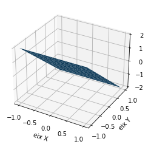